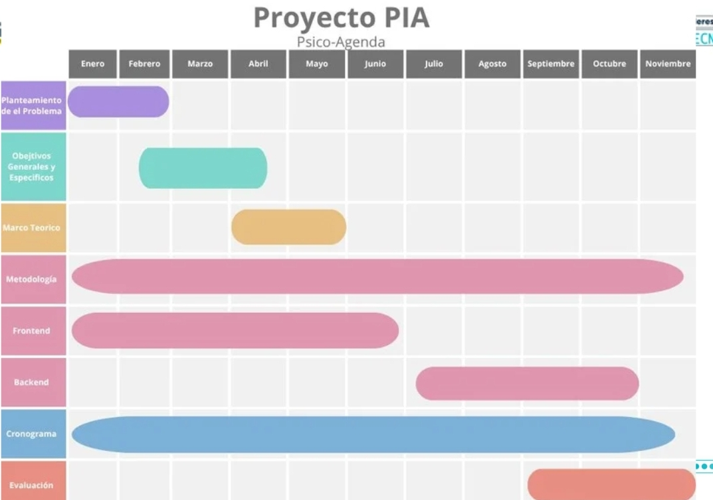

Problema o necesidad
Existen dificultades para organizar y realizar seguimiento a las citas de psicología. Algunos estudiantes también pueden sentir temor al solicitar acompañamiento.
Marco teórico y estado del arte
Los aplicativos web requieren una metodología y buenas prácticas para lograr un desarrollo eficiente.
La falta de información y el temor al juicio pueden dificultar la búsqueda de apoyo psicológico.
Objetivos
Objetivo general
Diseñar un aplicativo web para facilitar la gestión de citas de psicología.
Objetivos específicos
- Organizar las solicitudes de citas.
- Facilitar el seguimiento.
- Promover el acompañamiento psicológico.
Tecnologías utilizadas
Metodología
Identificación
del problema
Rastreo
de fuentes
Diseño
Desarrollo
Pruebas
El aplicativo se desarrolla mediante Frontend y Backend para la parte visual y la gestión de información.
Resultados esperados
Se espera mejorar la organización y seguimiento de las citas y facilitar el acceso al acompañamiento.
Mejor gestión de citas.
Consulta de solicitudes.
Mayor facilidad para solicitar apoyo.
.png)
Cronograma

Referencias
García et al. (2011).
Los aplicativos web requieren metodologías y buenas prácticas para un desarrollo eficiente. En psicología, el miedo al juicio y la falta de información pueden dificultar que los estudiantes busquen ayuda. Psico-Agenda busca facilitar y normalizar el acceso al acompañamiento psicológico.